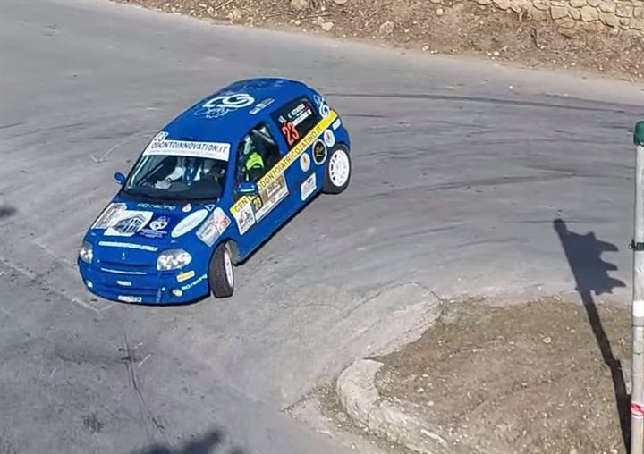
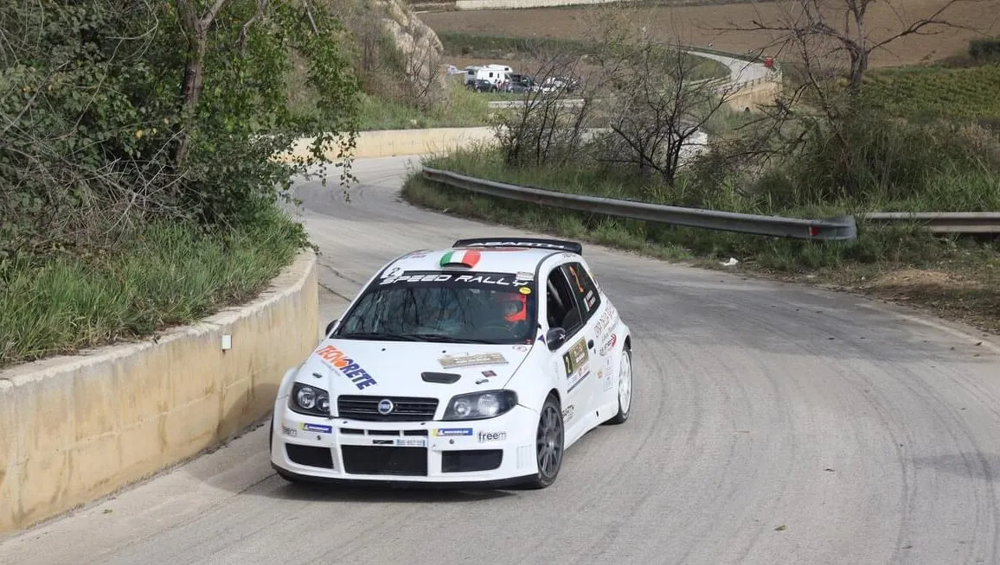

20 / 21 settembre 2025

Mariano Bruno e Giorgia Maria Bruno su Fiat Punto S1600
Il Rally del Belice (organizzato dall’Automobile Club Trapani) introduce un'importante novità: due prove speciali si correranno di sabato, di cui una in notturna al tramonto, come sottolineato dal delegato Rocco Castro e dal presidente dell'AC Trapani Giovanni Pellegrino.
Il programma dell'evento si sviluppa in un intenso fine settimana che ha inizio venerdì 7 settembre con le verifiche tecnico-sportive, prosegue l'indomani con lo shakedown per la messa a punto delle vetture e tre passaggi pomeridiani sulla prova speciale “Cammarata-Scalo” di 4,02 chilometri, per poi entrare nel vivo domenica 9 settembre con sei tratti cronometrati suddivisi in tre passaggi ciascuno sulle prove “Cammarata-Santa Rosalia” di 8,8 chilometri e “Alessandria della Rocca-San Biagio Platani” di 4,29 chilometri.
Organizzato il 26 e 27 luglio dall’Automobile Club Trapani con la collaborazione dello Sporting Club Partanna, ha aperto le iscrizioni il 2° Rally Valle del Belice.Le iscrizioni alla gara sono aperte a macchine moderne e storiche.